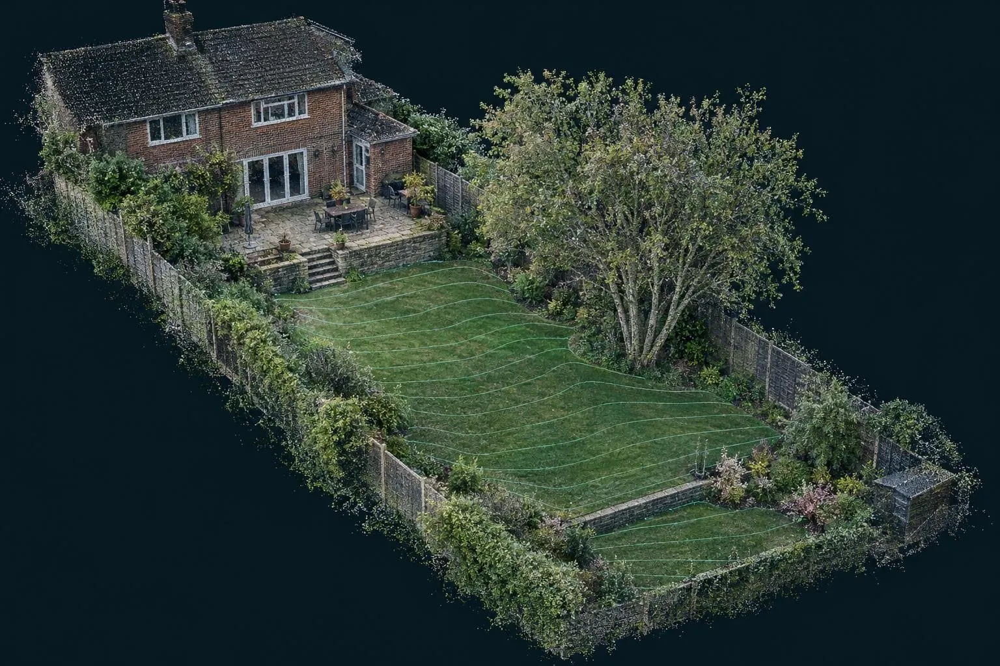

Cost guide
Garden scan and survey cost
What it costs to have your garden laser scanned, what you get for it, and how it compares with a traditional topographical survey.

Guide price: a garden scan costs from £395 for a typical rear garden up to around 300 m², from £595 for front and rear together, and from £795 for large gardens up to 1,000 m². You get a scaled levels plan with contours, the house damp-proof course height, walls, steps, trees and drains, plus the point cloud. Before VAT, travel included within 50 miles of Corby.
| Garden | Guide price | What it covers |
|---|---|---|
| Front garden or driveway | from £295 | Falls, DPC, dropped kerb and boundaries |
| Rear garden up to ~300 m² | from £395 | Levels, walls, steps, trees and drains |
| Front and rear | from £595 | Both gardens, one visit |
| Large garden up to ~1,000 m² | from £795 | Lawns, terraces and outbuildings |
| 3D surface model for your designer | + £150 | Cleaned surface in DWG or SketchUp-ready format |
Guide prices before VAT. Heavily planted or wooded gardens may need more set-ups.
What drives the price
Size matters less than complexity. A flat open lawn can be captured from a few set-ups. A terraced garden with walls, steps, dense planting and a summerhouse needs more, because the scanner has to see around every obstacle to measure the ground behind it.
Compared with a topographical survey
A topographical survey records points and draws a plan. A garden scan records the whole garden in 3D and then draws the plan from it, so nothing is missed and your designer can go back to the data. Published UK prices for a residential garden topographical survey commonly start around £800 plus VAT (for example, THS Concepts' published prices, checked October 2026). A garden scan from us starts at less than half that.
Where it pays for itself
- Excavation. Muck-away is priced per load. Knowing the volume to the nearest few cubic metres stops a quote being padded or a job running over.
- Walls and steps. A retaining wall that turns out 300 mm taller than drawn needs more blocks, more concrete and sometimes an engineer.
- Drainage. Patios must fall away from the house and stay 150 mm below the damp-proof course. With the levels known, that's designed in, not discovered.
Included on every garden scan
- Scaled levels plan (PDF and DWG)
- Contours at 100 mm or your interval
- House DPC and threshold levels
- Walls, steps, trees and drains
- Full point cloud
- Plan in 3–5 working days
How it works: garden and landscape scanning. All services: price guide.
Garden scanning across the area
Questions we get asked
How much does a garden survey cost?
A 3D laser scan of a typical rear garden up to about 300 square metres costs from £395, including a scaled plan with spot levels and contours and the point cloud. Front and rear gardens together are from £595.
Is it cheaper than a topographical survey?
For a domestic garden, usually. Published UK prices for a topographical survey of a residential garden commonly start around £800 plus VAT. Our garden scan includes a levels plan and the full 3D scan for less.
Do I need a garden survey before getting landscaping quotes?
It isn't compulsory, but it makes quotes comparable. Every landscaper prices from the same accurate levels, so you can compare like for like and avoid extras for 'unexpected' excavation later.
Can I add a 3D model for my designer?
Yes. A cleaned 3D surface model in DWG or SketchUp-friendly format is £150 on top of the garden price.
Book a scan or ask a question
Send the drawing, the location and when you need it. We reply the same working day with a fixed price.